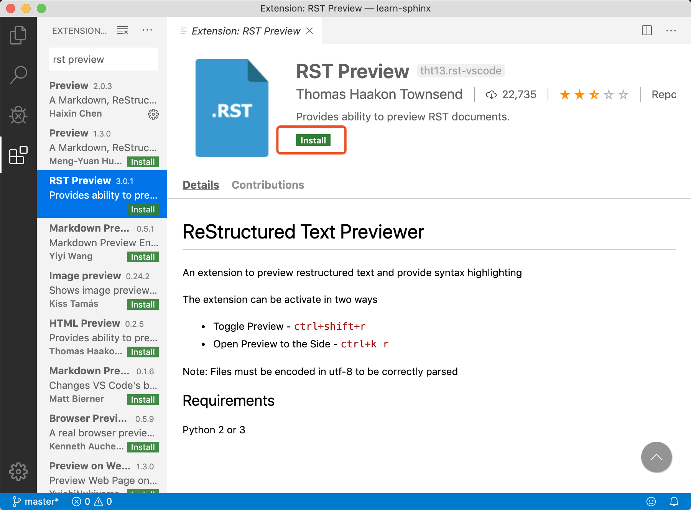
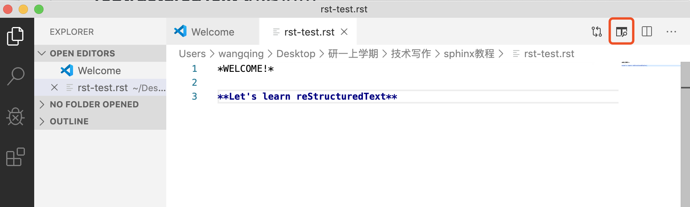
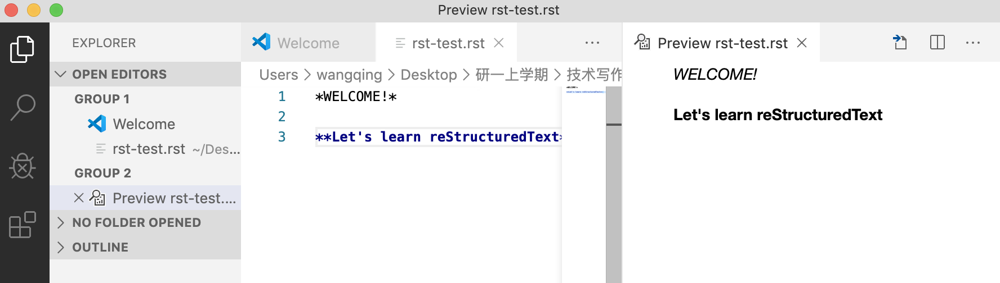
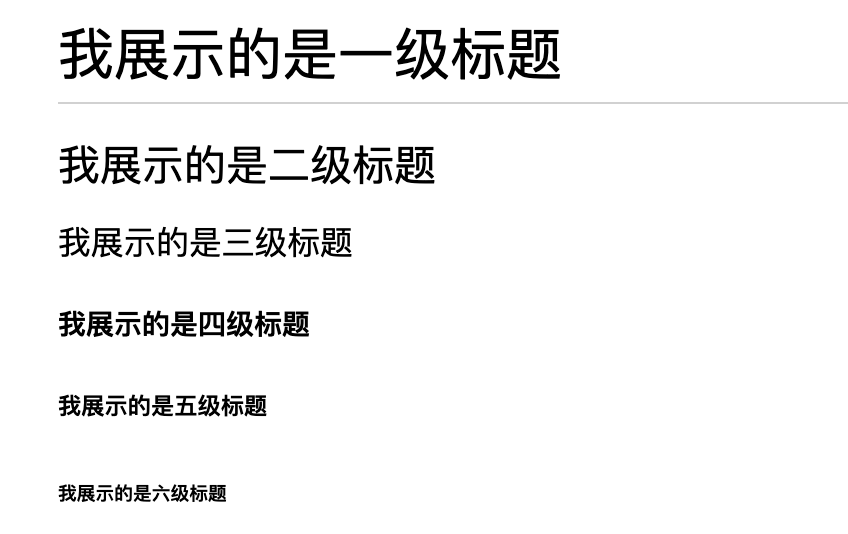

3. reStructuredText 语法指南¶
3.1. 1 简介¶
3.1.1. 理解 RST¶
reStructuredText（可简写为RST、ReST或reST）是一种用于文本数据的文件格式，主要用于 Python 编程语言社区的技术文档。 它是Python Doc-SIG（Documentation Special Interest Group）的 Docutils 项目的一部分，旨在为 Python 创建一组类似于 Java 的 Javadoc 或 Perl 的 Plain Old Documentation（pod）的工具。Docutils 可以从 Python 程序中提取注释和信息，并将它们格式化为各种形式的程序文档。
reStructuredText 是一种轻量级标记语言，其设计目的是（a）文档处理软件（如Docutils）可以处理它，（b）读和写 Python 源代码的程序员很容易读它。而本教程介绍的 Sphinx，则是从 reStructuredText 文档生成 HTML/PDF 的工具。
学习本章 reStructuredText 语法，首先要理解两种标记元素：指令（Directives）和角色（Role）。区别在于指令是块级元素，像段落一样使用。角色是行内元素，可以写在普通文本之中。
3.1.2. 插件安装¶
在第一小节 Sphinx开发环境配置中，已经介绍了如何在 Visual Studio Code 中安装 reStructuredText 拓展。开始学习本节 reStructuredText 前，同学们可以再前往 extensions 安装 RST Preview 插件。
安装插件后，同学们可以一边练习，一边随时预览文件渲染效果，检查自己书写是否正确。比如新建一个 rst-test.rst 文件，分别输入斜体文本、加粗文本，点击如下标志，可以看到已经有了相应效果：
 3.2. 2 标题¶
reStructuredText中，没有特定的字符指定给标题级别，这是因为结构是根据继承的标题来确定的。同学们可以自行选用自己习惯的符号， # * = - ^ “，或是 = - ` : . ‘ ” ~ ^ _ * + #，都是可以参考的标记顺序。
本篇指南使用 # * + = : - 标记一、二、三、四、五、六级标题，语法格式如下：
我展示的是一级标题
##################
我展示的是二级标题
******************
我展示的是三级标题
++++++++++++++++++
我展示的是四级标题
==================
我展示的是五级标题
::::::::::::::::::
我展示的是六级标题
------------------
渲染效果如下：
注意：
标题下方标记长度需要大于等于标题文字长度；
标题级别递进是按顺序的，这一点与 Markdowm 语法不同，否则会渲染失败；
全文标题标记符号要保持一致。
3.3. 3 格式¶
本节介绍 reStructuredText 中的段落和字体格式。
3.3.1. 段落¶
段落是reST 文档的基本模块，是由一个或多个空白行分离形成的文本块。
语法格式如下:
普通的文本段落或块级元素之间，必须使用空行加以区分，可按两下回车继续书写。
类似Python，同一段落的所有行必须左对齐而且同一级缩进。
每级缩进建议用 4 个空格，或设置 Tab 自动转为 4 个空格。
渲染效果如下：
普通的文本段落或块级元素之间，必须使用空行加以区分，可按两下回车继续书写。
类似Python，同一段落的所有行必须左对齐而且同一级缩进。 每级缩进建议用 4 个空格，或设置 Tab 自动转为 4 个空格。
3.3.2. 字体¶
reStructuredText 可以使用以下几种文字格式:
*斜体文本*
**加粗文本**
渲染效果如下：
斜体文本
加粗文本
注意：
格式标记不可相互嵌套；
星号及反引号在文本中容易与内联标记符号混淆，可使用反斜杠符号转义；如果内容需要特殊字符分隔，可使用反斜杠转义，如:
thisis\ *one*\ word.文本与格式标记符号之间不要留空格，
* text*不能实现渲染效果；
3.3.4. 脚注¶
在文档中添加脚注，文内使用 [#name]_ 标注脚注，文末使用 .. rubric:: Footnotes 添加脚注的内容。
比如：
Let's learn reStructuredText [#f1]_ ! You'll see a footnote [#f2]_.
.. rubric:: Footnotes
.. [#f1] reStructuredText 是一种轻量级标记语言。
.. [#f2] 这是第二条脚注.
渲染效果如下：
Let’s learn reStructuredText 1 ! You’ll see a footnote 2.
Footnotes
此外，也可以用数字标注脚注，或者不指定 name，使用自动数字标记脚注 [#]_。 # 有自动数字标记的功能，同学们接下来学习列表时也会注意到这一点。
3.4. 4 列表¶
官方文档介绍了多种列表形式，同学们学习时可以优先掌握前两种，其余形式可以在应用时对照书写。
3.4.1. 无序列表¶
无序列表使用星号(*)、加号(+)或是减号(-)作为列表标记。语法格式如下：
* 第一项
* 第二项
* 第三项
+ 第一项
+ 第二项
+ 第三项
- 第一项
- 第二项
- 第三项
渲染效果如下：
第一项
第二项
第三项
第一项
第二项
第三项
第一项
第二项
第三项
3.4.2. 有序列表¶
有序列表使用数字并加上 . 号来表示。语法格式如下：
1. 第一项
2. 第二项
3. 第三项
渲染效果如下：
第一项
第二项
第三项
如果项很多，可以通过使用标志 # 自动编号有序列表，也可以和数字混用。
#. 第一项
#. 第二项
#. 第三项
第一项
第二项
第三项
3.4.3. 定义列表¶
定义列表第一行写 term，类似于列表的一项名称。中间换行即可，不需要空行，缩进一级书写内容。比如：
what
第一项
how
第二项
渲染效果如下：
- what
第一项
- how
第二项
3.4.5. 选项列表¶
使用``-term``， 后面与具体内容间留出两个或以上空格。比如：
-a 选项一
-b 选项二
渲染效果如下：
- -a
选项一
- -b
选项二
定义列表、字段列表、选项列表三种形式都可以灵活用自己 term，保证 term 只有一个文本行即可。比如：
-CAT 描述二
-TC 描述一
渲染效果如下：
- -CAT
描述二
- -TC
描述一
3.4.6. 列表嵌套¶
与 Markdown 语法类似，RST 中也可以实现列表嵌套。注意父列表与子列表要以空行分隔：
1. 父列表第一项
2. 父列表第二项
* 子列表第一项
* 子列表第二项
3. 父列表第三项
渲染效果如下：
父列表第一项
父列表第二项
子列表第一项
子列表第二项
父列表第三项
3.5. 5 代码¶
3.5.2. 代码区块¶
在段落后使用两个连续英文引号标记 :: 引出原始文本块。
代码块段落缩进，多行代码中间不需要空行，与其他文本前后空行分隔，最后有空行，缩进退回到 :: 的位置，就表示退出原始文本块。比如：
第一段文本 ::
代码区块演示
展示源代码，不会***渲染***。
第二段文本
渲染效果如下：
第一段文本
代码区块演示
展示源代码，不会***渲染***。
第二段文本
提示：在 reStructuredText 中，:: 是很神奇的标记：
如果 :: 标记作为独立段落存在，则整段都不会出现在文档里.
如果 :: 标记前面有空白，标记将被删除。
如果 :: 标记前面非空白，标记会被单个冒号取代。
3.6. 6 引用¶
在reStructuredText中，引用有两种方式，但无论哪一种，引用中都不能使用标题。
3.6.2. 引用带格式文本¶
如果想在引用里也使用 reStructuredText 的语法标记，缩进就可以实现了，引用会自动换行：
(Tab)引用文本，可以 *包含渲染*
渲染效果如下：
引用文本，可以 包含渲染
3.7. 7 链接¶
3.7.1. 外部链接¶
使用外部链接最简便的方式是直接粘贴网址，两端用空格和文本隔开，reStructuredText 会自动把网址转成超链接。如：http://www.ss.pku.edu.cn
渲染效果如下：
北京大学软件与微电子学院: http://www.ss.pku.edu.cn
更推荐的形式，是用锚文本来显示一个链接，尖括号包裹网址放在文本后面，注意空格。用一对反引号包裹它们，结尾跟一个下划线。基本标记格式为： `链接文本 <网址>`_ 。
比如：
可参考资料：`Sphinx官网 <http://www.sphinx-doc.org/en/master/>`_ ，`reStructuredText 详细说明 <https://docutils.sourceforge.io/docs/ref/rst/restructuredtext.html#sections>`_
渲染效果如下：
可参考资料：Sphinx官网 ，reStructuredText 详细说明
3.8. 8 图片¶
3.8.1. 插入图片¶
图片是块级元素，要单独成段，一般不能嵌入行内。建议优先使用源文件的相对路径，图像指令应为：
.. image:: 路径/文件名
比如在将 sphinx 图片存入与这篇指南同一文件夹 images 下，插入图片的语法格式为：
.. image:: images/rst-insert-sphinx.jpg
插入图片如下：

如果是绝对路径，则以文件的源目录为根目录. 此外，添加图片的形式也可以以网址链接形式添加。
3.8.2. 图片格式¶
图片后还可以加入一些额外选项，比如大小选项宽度（width）和高度（height）。如果没有单位或单位为像素, 给定的尺寸信息仅在输出通道支持像素时才有用，如输出LaTeX 没用；其他单位(如 pt)在输出HTML、LaTeX 时被用到.添加选项的格式如：
.. image:: picture.jpeg
:height: 100px
:width: 200 px
:scale: 50 %
:alt: alternate text
:align: right
如果把上一个例子插入的图片缩小一些，那么语法格式可以为：
.. image:: images/rst-insert-sphinx.jpg
:height: 50px
:width: 218 px
插入图片如下：
3.8.3. 图片输出形式¶
Sphinx会自动将图像文件拷贝到输出目录中（例如HTML格式输出，会拷贝到 _static 目录中。）
Sphinx 延伸了标准的文档化行为，只需在后面加星号：
.. image:: 图片名.*
这样写 Sphinx 就会搜索所有名字匹配的图像，而不管图像类型. 每个生成器则会选择最合适的图像. 源文件目录里同一文件名可能含有 pdf 和 png 两个文件, LaTeX 生成器会选择前者，而 HTML 生成器会匹配后者.
3.9. 9 表格¶
reStructuredText 主要有两种表格形式，简单表格和网格表格。
3.9.1. 简单表格¶
简单表格书写简单, 基础形式好上手。要求有多行，且第一列元素不能分行显示。
构成简单表格的标记主要是”=”：用于绘制表格上方、下方框线，以及分隔标题，比如：
===== ===== =======
A B A and B
===== ===== =======
False False False
True False False
False True False
True True True
===== ===== =======
渲染效果如下：
A |
B |
A and B |
|---|---|---|
False |
False |
False |
True |
False |
False |
False |
True |
False |
True |
True |
True |
在此基础上，每格内容如图所示可以相应使用”-“分隔表头，但不支持合并单元格：
===== ===== ======
Inputs Output
------------ ------
A B A or B
===== ===== ======
False False False
True False True
False True True
True True True
===== ===== ======
渲染效果如下：
Inputs |
Output |
|
|---|---|---|
A |
B |
A or B |
False |
False |
False |
True |
False |
True |
False |
True |
True |
True |
True |
True |
如果一些单元格没有内容，需要用”..”或””表示，否则会被视为上一行的延续：
===== =====
col 1 col 2
===== =====
1 Second column of row 1.
2 Second column of row 2.
Second line of paragraph.
3 - Second column of row 3.
- Second item in bullet
list (row 3, column 2).
\ Row 4; column 1 will be empty.
===== =====
渲染效果如下：
col 1 |
col 2 |
|---|---|
1 |
Second column of row 1. |
2 |
Second column of row 2. Second line of paragraph. |
3 |
|
Row 4; column 1 will be empty. |
3.9.2. 网格表格¶
网格表格可以自定义表格的边框，更灵活，但绘制相对复杂。构成网格表格的标记有以下几种：
“-“用于绘制横线，分隔各行；
“=”用于分隔标题与表格主体，但标题可有可无，视情况而定；
“|”用于绘制竖线，分隔各列；
“+”用在行与列的交界处。
网格表格支持合并单元格，内部也可以嵌套列表。官方示例囊括了这些细节：
+------------------------+------------+----------+----------+
| Header row, column 1 | Header 2 | Header 3 | Header 4 |
+========================+============+==========+==========+
| body row 1, column 1 | column 2 | column 3 | column 4 |
+------------------------+------------+----------+----------+
| body row 2 | Cells may span columns. |
+------------------------+------------+---------------------+
| body row 3 | Cells may | - Table cells |
+------------------------+ span rows. | - contain |
| body row 4 | | - body elements. |
+------------------------+------------+---------------------+
渲染效果如下：
Header row, column 1 |
Header 2 |
Header 3 |
Header 4 |
|---|---|---|---|
body row 1, column 1 |
column 2 |
column 3 |
column 4 |
body row 2 |
Cells may span columns. |
||
body row 3 |
Cells may span rows. |
|
|
body row 4 |
|||
提示：纯手打表格比较麻烦，书写中文内容标记难以对齐。如果精力允许，同学们也可以尝试 Emacs 编辑器绘制网格表格。
3.9.3. 列表表格¶
此外，还有一种特殊的列表表格，通过创建一组嵌套的列表来渲染成表。
父级列表是行，每一行的子列表是列，每行的列数必须一致，不支持合并单元格），缺少的格用空出占位。比如：
.. list-table::
* - 单行代码
- 代码区块
- 代码高亮
* - 简单表格
- 网格表格
- 列表表格
* - 外部链接
- 内部链接
-
显示效果如下：
单行代码 |
代码区块 |
代码高亮 |
简单表格 |
网格表格 |
列表表格 |
外部链接 |
内部链接 |
3.10. 参考文档¶
更多详细说明，请参考 reStructuredText官方文档 。